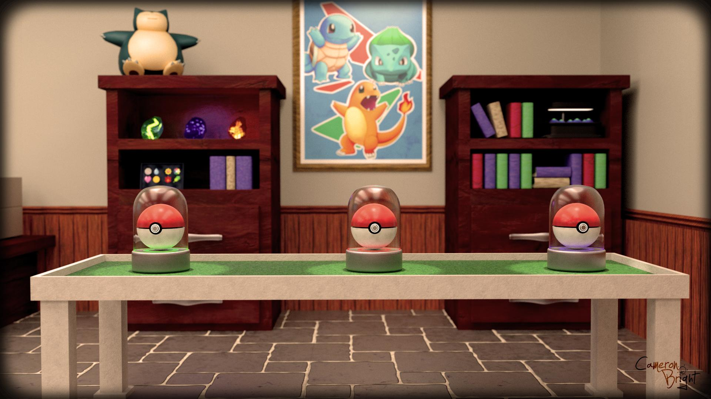
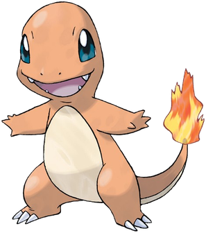
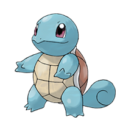

#001 Bulbasaur
Grass / PoisonA strange seed was planted on its back at birth. The plant sprouts and grows with this Pokémon.
Choose Your First Partner Pokémon
Before leaving Pallet Town, every trainer must choose one of these three iconic partner Pokémon. Each partner brings unique strengths and elemental mastery to your team.

A strange seed was planted on its back at birth. The plant sprouts and grows with this Pokémon.

Obviously prefers hot places. When it rains, steam is said to spout from the tip of its tail.

After birth, its back swells and hardens into a shell. Powerfully sprays foam from its mouth.